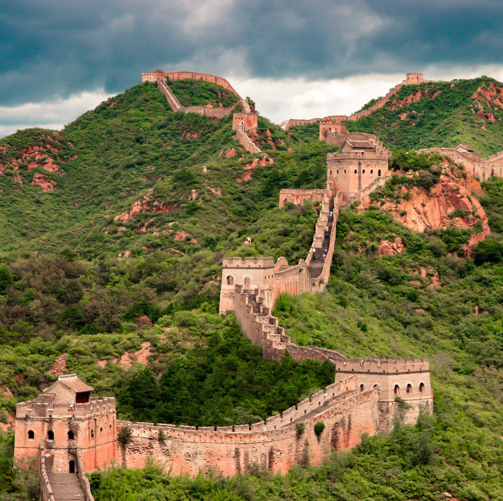
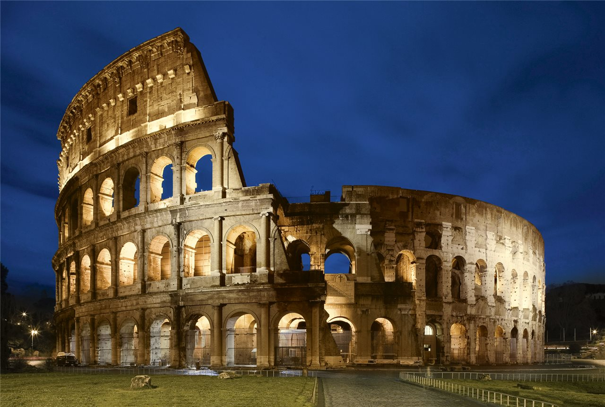
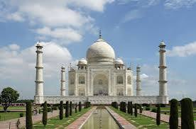
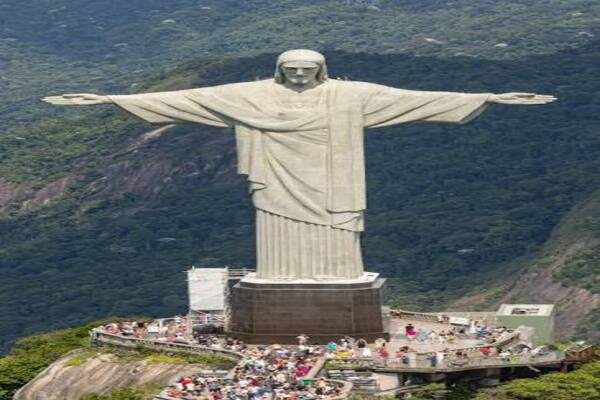
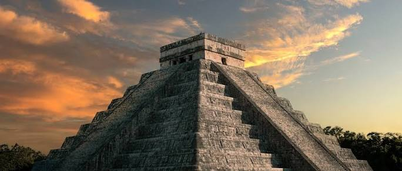

Las 7 maravillas del mundo son lugares muy famosos e importantes que están en diferentes partes del mundo. Fueron elegidas en el año 2007 y se destacan por su gran belleza, su historia y la forma en que fueron construidas. Entre ellas están Chichén Itzá, el Cristo Redentor, el Coliseo de Roma, la Gran Muralla China, Machu Picchu, Petra y el Taj Mahal. En este sitio web vamos a conocer un poco más sobre cada una de ellas.






